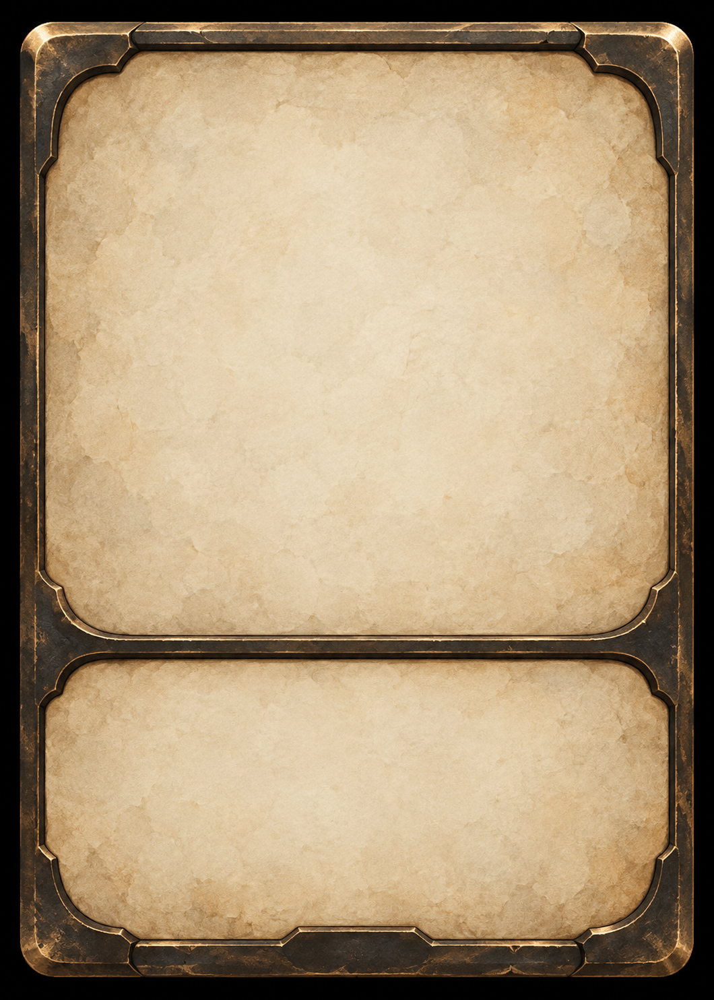

世界观架构
每个世界是一块独立的设定空间。进入某个世界后，只会看到属于它的资料。
没有匹配的世界。
世界
资料编辑器
新资料proposed
卡牌设计
编辑卡牌数值、描述和关键词。所有本地草案均为 proposed / untested。
暂无卡牌
点击“创建卡牌”进入独立编辑界面。
没有匹配的卡牌。
卡牌编辑器
新卡牌proposed

未填写描述
预览与保存后编译的卡面使用同一排布：原画、名称、规则框、底部属性。随从种族与法术派系都显示在卡面底部中央；法术无底部属性，武器使用耐久。
全量原画集
素材库全部原画，含未使用素材暂无已使用原画
在卡牌编辑器中选择原画后，这里会自动汇集。
自由创作 Agent
不受资料模块和固定 JSON 格式限制，用对话完成构思、讨论、改写与分析。
创作对话
对话仅保留在当前页面✦从任何创作需求开始
比较设定、续写场景、改写文字，或一起拆解一个尚未成形的想法。
宏观世界模拟器
规则引擎推动大陆按季度变化；选择地区后，LLM 只对局部态势提出可审计的干预建议。
正在连接
群陆态势图
点击地区进入局部精细模拟季度趋势
规则结算推进季度后显示趋势。
大陆事件
最近 24 条尚无事件。
开发诊断：W99 Action / Knowledge / Replay
W99 能源危机测试
尚未连接
城市储备—
→主体持有—
→累计消耗—
等待重放校验
权威状态
等待实例打开观察台后加载 W99 状态。
模拟控制
先完整运行，再按需单步观察
一键跑完整个能源危机
两个规则主体会自主申请、转交并消耗能源，直到 12 点能源全部进入消耗池；结束后自动验证历史重放。
手动单步调试
选择一个实验推进下一 Tick。
行动审计
最近 30 条尚无行动。
事件流
最近 30 条尚无事件。